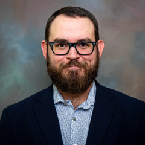

|
Mark LaCour is an Assistant Profesor of psychology at LSUA. He earned his B.A. in philosophy (with a minor in cognitive science) and an M.S. in psychology from the University of Louisiana at Lafayette. He earned a Ph.D. in Experimental Psychology from Texas Tech University along with a graduate certificate in quantitative methods. Mark does research on beliefs and attitudes: How they form, how they change, and how they affect behavior. His research has focused on vaccine hesitancy, attitudes towards food technologies (e.g., GMOs).
|
|  |
Zebulon Bell grew up in Podunk, Alabama, and you can tell from just hearing him speak for a few seconds. He is a drummer, so imagine what his personality is like just based off of that and you're probably close enough. Zeb does things to animals and then writes papers about it. He hangs out at the Zoo and listens to way too much butt rock. He earned his Ph.D. from Oakland University.
|